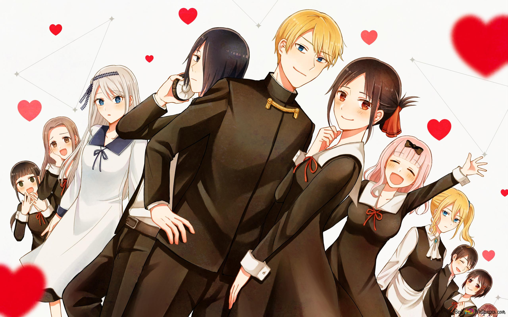

Kaguya-Sama: Love Is War

"Kaguya-sama: Love is War" is a romantic comedy anime that has captured the hearts of viewers worldwide with its fresh take on the genre. The anime is based on the manga series of the same name written and illustrated by Aka Akasaka, and it first premiered in Japan in January 2019.
The anime follows the story of Kaguya Shinomiya, the daughter of a wealthy family and the vice-president of the prestigious Shuchiin Academy's student council, and Miyuki Shirogane, the president of the student council and a genius who has worked hard to rise to the top of the academic ladder. Both Kaguya and Miyuki are deeply in love with each other but are too proud to confess their feelings.
The series centers around their attempts to make the other person confess their feelings first, leading to a hilarious and entertaining battle of wits. Each episode features a different scenario in which they try to outsmart each other, whether it's a game of chess or a cultural festival competition. However, as the series progresses, we see the characters grow and develop beyond their initial roles, revealing deeper layers of their personalities.
One of the strongest aspects of "Kaguya-sama: Love is War" is its clever writing. The anime takes familiar romantic comedy tropes and subverts them, keeping the audience guessing and surprised at every turn. The dialogue is sharp and witty, and the comedic timing is spot-on, making for a thoroughly enjoyable viewing experience.
Aside from Kaguya Shinomiya and Miyuki Shirogane, the two main characters, the anime also features Chika Fujiwara, the secretary of the student council. Chika is a cheerful and energetic girl who often acts as a mediator between Kaguya and Miyuki. She provides a lighthearted and comedic element to the series, often getting caught up in the antics of the two main characters.
There's also Yu Ishigami, a member of the student council who initially comes off as aloof and disinterested in his duties. However, as the series progresses, we learn more about his troubled past and see him grow and develop as a character.
In addition to the student council members, there are several other characters who make recurring appearances throughout the series. Miko Iino is a first-year student who joins the student council later in the series and often clashes with Kaguya and Miyuki. Hayasaka Ai is Kaguya's personal assistant, who is often dragged into the duo's schemes.
Each character brings something unique to the series, whether it's comedic relief or a deeper exploration of themes like trust and friendship. The interactions between the characters are what make the show so enjoyable to watch, as we see their relationships develop and evolve over time.
Overall, "Kaguya-sama: Love is War" is a well-rounded anime that offers a little something for everyone. Its diverse cast of characters and their various dynamics add depth to the show's already compelling storyline. If you're looking for a romantic comedy that will keep you laughing and engaged from start to finish, "Kaguya-sama: Love is War" is definitely worth a watch.